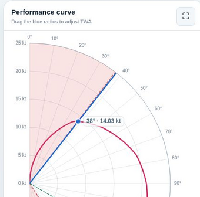
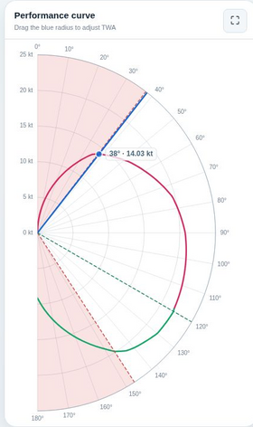
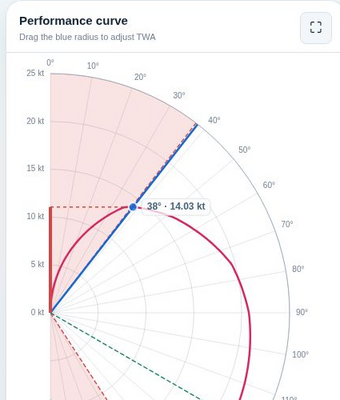

Polars Chart
Chart
A Polars Chart is generally represented in a semi-circle Scale (180°). This is because modern boats have symmetrical performances, thus behaving similarly whether the wind comes from port side (left) or from starboard (right).
The Scale

A polar scale is built upon 2 dimensions:
The angle must be read from the top (0°) to the bottom (180°), and represents the TWA.
The distance to the center represents the Boat Speed.
The blue radius indicates the selected TWA. Its marker stays on the outer semicircle so it remains easy to grab, while its label displays the corresponding boat speed.
The Boat Speed axis might rescale if the plotted curve becomes too narrow or too large as the TWS varies.
Zoom
The ECharts view can zoom from 100% to 300% around the active point, using its TWA and Boat Speed as the focus.
- Use the [−] and [+] buttons in the chart header.
- Use the mouse wheel over the chart, or pinch with two fingers on a touch screen.
- Click the percentage button or double-click the chart to return to 100%.
As the zoom increases, both the angular and speed ranges become narrower around the active point. The Boat Speed scale progressively adapts to the active speed and to the local variation of its sail curve. Only the portion of the active sail curve inside the visible ranges is shown, and a colored point marks the actual polar position. The blue point remains on the outer semicircle as the TWA drag handle. This makes it easier to check whether the selected TWA lies on a local peak. Polar calculations remain unchanged.
The Curve

The curve is a summary of the best speed at every angle.
Each color represents the sail producing the best speed for a given angle and for the TWS provided in the input field.
The best sail for a given angle is also displayed in the Sails panel where the bold line has the same color.
It is possible to draw one curve per sail by checking the Plot Full Sails Curves option on the Sails side panel.
Best VMG

Please read this section first if you don't know what the VMG is.
The VMG can be visually represented on the chart thanks to the VMG Projection to Axis in the Attitude panel.
The VMG projection option will draw a red dotted horizontal line, showing the effective amount of speed pushing the boat in the wind direction.
At the two angles where VMG is best (upwind or downwind), a red dashed line represents the Best VMG.
Also, the portion of the Chart between 0° and Best upwind VMG on one side, and Best downwind VMG and 180°
on the other side, are fulfilled in pale red because they are almost never a good idea to sail
at those angles.
On the example beside:
(1) is the VMG Projection,
(2) is the underperforming zone below Best VMG,
(3) is the Best Upwind VMG angle.